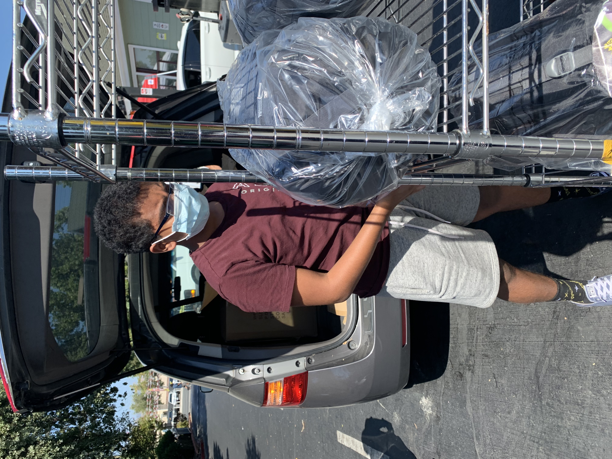

- Joni Mitchell
Education
- Adrian Wilcox High School (Class of 2023) Santa Clara, CA GPA (weighted / unweighted): 4.0 / 3.53
- Gavilan College, Jun - Jul 2021 Gilroy, CA CSIS-42 Python Programming
- Mission College, Jun - Jul 2022 Santa Clara, CA BUS 021 Introduction to Business Computing
- Santa Ana College, Jun - Aug 2022 Santa Ana, CA ENGR 100 Introduction to Engineering
Work Experience
Intern, seligo.io (Summer 2021), Santa Clara, CA
Collection of technical interview questions for Python language. My responsibilities included gathering typical programming questions in Python to feed the online interview tool that Seligo was developing.
Research
Research Intern with Professor, San Jose State University (summer 2022)
…Research Student, ASDRP (2021)
As part of a machine learning team of five students, I created a classification machine learning model to detect Sudden Oak Death in leaves.
Awards / Achievements
- California Scholarship Federation (2021) @ Wilcox HS
- Honor Roll / Superior Academic Performance @ Wilcox HS - 9th grade
- Most Improved Player Varsity Athletic Award, 1st, School
- Newspaper article published in The Hindu, a leading newspaper in India recognizing contribution to rural community schools
Learning Outside School
- Udemy Python for Absolute Beginners Certificate Course, 10th grade
- A4 Machine Learning Bootcamp, Student, 10th grade
- Student Self Leadership Course, Blanchard Institute, Summer 2020
Extracurricular Activities
Founder, codescape.org
Created a non-profit organization teaching kids how to develop mobile apps using MIT App Development block coding for underserved, rural communities in India. Prepared the course material, reached out to relatives in India to find a school where students do not have many resources and organized weekly virtual sessions to teach kids at the school how to create simple apps.Founder & President, Wilcox AI Club (since 2021)
Conducting coding sessions, informational talks, and doing mini-projects. As founder and president, I was responsible for hosting club meetings, and I taught seven students how to make machine learning models with Python on an online learning platform called Kaggle. I also entered the club in a Kaggle competition, in which students were able to apply the experience they gained to build models and compete with others.
Member, Coding Club & Math Club (since 2019)
Learned new programming concepts like recursion and iteration. Gave ideas for future events and how school competitions can be improved upon.
Varsity player, Tennis (2020 - 22)
As a doubles varsity player, I learned the importance of teamwork, because I constantly had to strategize with my teammate to find ways to win league matches. During practices, I worked on ways to improve my volleys and serves, which I implemented during games. At the end of the season, I was awarded the “Most Improved Player” plaque by my coach.
Member, Teen Council (since 2020)
Part of Teen Council in Santa Clara City Library, help organize events.
Chapter President, No App Maker Left Behind (since 2021)
Conducted app development courses for Grades 3-5 in the community library and neighborhood schools. As Santa Clara chapter president, I taught virtual app development at a community library.
Synopsis Science Fair
Participated in the 2022 Synopsis Science Fair Competition, and developed an Android mobile app to detect car Break-ins using vibration and audio signals.
Helping Community
- Ran a fundraiser, by preparing Indian savories, and advertised to my friends and family. I made around $200 and donated the proceeds to the Smile Foundation to provide PPE kits to rural villages in India through Smile Foundation (India) during COVID. Read the testimonial here.
- Donated school supplies to Rebekah Children's Services using internship income.
- Delivered sleeping bags to Sacred Heart in San Jose, CA.


Additional Skills
- Programming in Java, Python, Mobile App Development
- Spanish (intermediate)